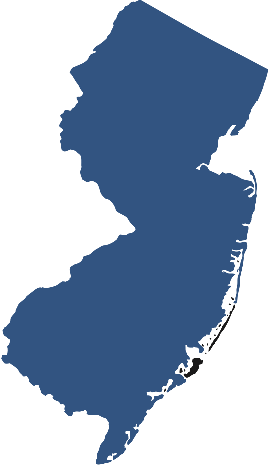
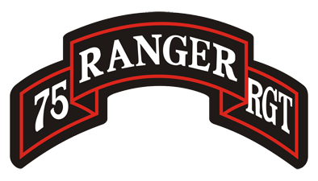

ABOUT ME
I was born in New Jersey and spent the first 21 years of my life there. If you have ever watched the ever popular MTV reality TV show "The Jersey Shore", I apologize and wish I could give you your time back. We are not all like that. I grew up with 2 main interests: sports and video games. I played baseball for 12 years and wrestled throughout highschool. Video games such as Call of Duty and Halo were my first introductions to "tech." My first true exposure to computers was when I took computer science in highschool where we learned to code in C++. Looking back, creating that tic-tac-toe game was way cooler than I thought in the moment.
During my senior year of highschool, Hurricane Sandy destroyed a large portion of the East coast of New Jersey, including the entire first floor of my family's home. Perfect timining to apply to college... After receiving a few acceptance letters, I decided that I would to attend Rutgers University. There, I would go on to study economics and gradute with a Bachelor's Degree. Looking back, one of the defining moments in college for me was when I went to a career fair and asked myself "why are the Marines here at college career fair?" This would spark an idea that led to the next chapter of my life.

On my 22nd birthday (not a day before or a day after), I found myself on a plane flying from NJ to Georgia. I was on my way to infantry basic training at Fort Benning with very little idea of what was in store for me. I enlisted in the Army roughly 1 month after graduating from Rutgers. After roughly 9 months of non-stop training and assessments, I had graduated Ranger Assessment and Selection Program (RASP for short). I served in 3rd Ranger Battalion, 75th Ranger Regiment for 4 years. During this time I deployed to Afghanistan, Iraq, and Syria. The greatest challenge that I experienced was Ranger School. In all honesty you gain very few skills from that school, but what you do gain is a new perspective on what you should consider "hard." It also gave me a new found respect for my mental and physical capabilities. Aside from the life long friendships, the Army gave me the most formative years of my life.
About 6 months before I officially transitioned out of the Army, I decided that I would pursue a career in IT. I earned the CompTIA A+ IT Certification but it was during my studies that I was reintroduced to programming for the first time since high school. I immediately found the field of Software Development more interesting. I really enjoy the process of seeing something I program finally pan out like I had initially envisioned. Creative problem solving is my favorite thing about my coding journey. If you have made it to this point in my mini-biography, thank you. You should consider clicking the contact button on the top or bottom of the screen if you found anything you just read interesting!